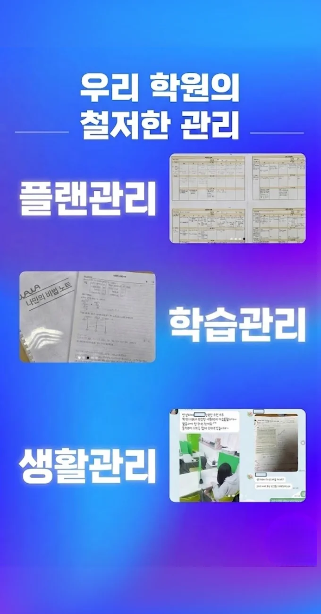

아이에게 딱 맞는 화성봉담읍 수학 내신학원을 찾을 때는 단순히 문제를 많이 푸는지보다 피드백이 얼마나 체계적인지를 꼭 살펴보셔야 해요. 무작정 반복해서 공부하게 하는 것보다는 학생이 집중하지 못했던 부분을 정확히 짚어주고, 이를 보완할 수 있는 구체적인 가이드를 주는 곳이 좋답니다. 특히 수업 후에 배운 내용을 오분 이내로 짧게 영상으로 시청하며 복습할 수 있는 시스템이 있다면 아이가 기억을 오래 유지하는 데 큰 도움이 될 거예요. 화성봉담읍 수학 내신학원에 있는 시간만큼 중요한 것이 집으로 돌아온 후의 복습 태도인데, 짧은 영상이라도 눈으로 확인하고 귀로 들으면서 기억을 더듬는 과정이 필수적이거든요. 부모님 입장에서는 선생님이 매번 구체적으로 무엇을 부족해하는지 알려주셔야 집에서 도울 수 있는데, 이런 피드백 시스템이 잘 갖춰진 곳을 선택하시는 것이 현명한 선택이 될 거예요. 이렇게 꾸준한 관리가 이루어질 때 아이의 성적도 자연스럽게 따라오기 마련이니까요.
화성봉담읍은 초중고 학년이 고르게 섞여 있어 각 연령대가 필요로 하는 학습 지원이 다양하게 제공돼요. 초등 저학년은 기초 개념을 놀이와 연계한 활동 중심 수업이 효과적이며, 고학년은 교과서 심화 내용에 색깔 펜을 활용해 시각적 정리를 돕는 방식이 인기가 많아요. 중학생은 말하기서술력 강화 훈련을 통해 논리적 사고를 키우는 프로그램이 강조되고, 고등학생은 핵심 개념 요약지를 수업 직후 배부해 복습 효율을 높이는 전략이 많이 활용돼요. 전체 학년을 아우르는 화성봉담읍 수학 내신학원은 학기 시작 전 커리큘럼 설명회를 통해 학부모와 학생에게 전체 흐름을 미리 안내해 주어 학습 목표 설정에 큰 도움이 돼요.
와와학습코칭센터는 단순히 지식을 주입하는 곳이 아니라 아이가 배운 내용을 요약하고 표현하는 능력을 키워주는 데 집중해요. 스스로 설명할 수 있어야 진짜 아는 것이기 때문이죠. 수업은 바이엘 오일 일 수업이 십오만 원, 바이엘 사일 일 수업이 십사만 원으로 책정되어 있어 부담 없이 시작할 수 있는 편이에요. 아이가 수업 중에 이해가 안 가는 부분이 있으면 선생님이 친절하게 다른 방식으로 설명해 주어서 개념 공백을 메워줄 수 있어요. 학생이 스스로 계획하고 실행하는 힘을 길러주는 게 목표인 곳이라 처음 화성봉담읍 수학 내신학원을 찾는 학생들에게도 아주 좋아요.
| 학원명 | 와와학습코칭학원 |
| 수강료 | 바이엘5일 150,000원 | 바이엘4일 140,000원 |
CURRICULUM
오전 시간에는 새로운 진도를 신속히 진행하고, 오후에는 복습에 집중해 학습 효과를 고정해요. 교사는 각 과목별 핵심 포인트를 요약한 자료를 제공하고, 학생은 이를 기반으로 스스로 문제를 풀어봐요. 중학생에게는 전 과목 통합 복습 시간을 배정해 균형 잡힌 학습을 유지해요. 고등학생에게는 선택 과목 심화 학습과 모의고사 분석 시간을 별도로 운영해요. 수업 후 피드백 시간에는 오답 노트를 검토하고 개선 방안을 함께 모색해요. 또한, 학습 계획표를 주간 단위로 업데이트해 목표 달성을 체계화해요. 마지막으로, 화성봉담읍 수학 내신학원은 학생의 학습 습관을 지속적으로 모니터링하고 필요시 개별 코칭을 제공해요.
이 지역 학생들은 화성봉담읍 수학 내신학원 선택 단계에서 주변 편의시설과 거리만을 기준으로 결정하는 경우가 많아, 실제 교육 품질을 놓치는 경우가 있어요. 등록 후에는 목표 설정 없이 무작정 수강을 이어가다 보니 학습 효율이 떨어지는 경우가 빈번하고, 학습 관리 단계에서는 자기 점검 습관이 부족해 오답을 반복하는 문제가 나타나요. 이러한 실수를 예방하려면 초기 상담에서 목표와 학습 스타일을 명확히 하고, 정기적인 피드백을 통해 진행 상황을 점검하는 것이 중요해요.
와와화성봉담읍 수학 내신학원의 학습 전략은 학생의 눈높이에 딱 맞는 수업 설명어를 선택하는 기준을 먼저 정립하는 것에서 시작해요. 수업 중에는 집중도, 과제 이행률, 수업 참여도 같은 요소를 실시간 보드에 기록하여 아이가 현재 상태를 시각적으로 확인할 수 있게 하거든요. 이를 통해 개념 내재화와 문제 해결 능력 강화 효과를 톡톡히 볼 수 있어요. 중간에 멈춘 걸 다시 시작 못 하는 학생들을 위해 주 이회, 각 팔십분 수업으로 구성하여 요약 필기 지도를 포함하고 있어요. 짧게라도 매일 꾸준히 생각을 정리하는 훈련이 공부의 지속성을 보장해 주기 때문이랍니다.
우리 화성봉담읍 수학 내신학원은 중학교 2학년처럼 성실하지만 시험 상황에서 긴장해 실력이 발휘되지 않는 학생에게 특히 적합해요. 매 시험 후 원인을 파악하지 못하는 경우, 맞춤 피드백과 원인 분석을 통해 구체적인 개선 방안을 제시해요. 또한, 자기 주도 학습에 어려움을 느끼는 학생에게는 목표 설정과 관리 방법을 체계적으로 교육해요. 이런 과정을 통해 자신감을 회복하고 실력을 끌어올릴 수 있답니다.
한 학부모님은 다양한 교재와 추가 자료를 활용해 시야가 넓어졌어요라고 말씀하셨어요. 또 다른 학부모는 수업 시간에 선생님과 눈빛 교환이 활력을 주었어요라며 만족감을 표현했어요. 또 한 학생은 예상보다 더 큰 성취감을 느꼈고, 자신감이 생겼어요라고 전했어요. 또 다른 학부모는 선생님이 시험을 꼼꼼히 분석해 주셔서 믿음이 갔어요라고 강조했어요. 마지막으로 한 학부모는 교실 색감이 차분해서 집중에 도움이 되었어요라고 평가했어요.

| 학원명 | 와와학습코칭학원 |
| 등록번호 | 제3918호 |